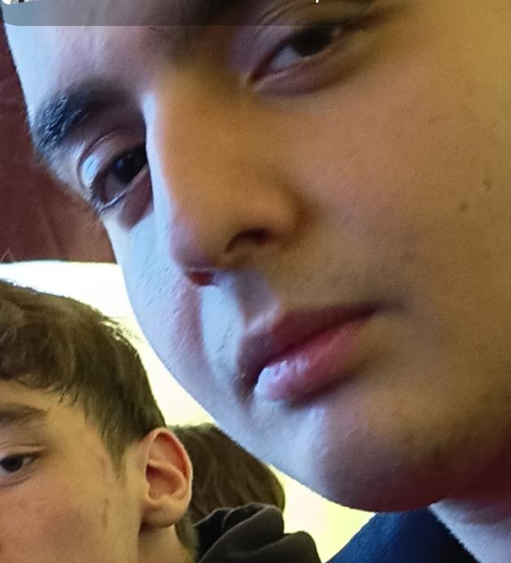
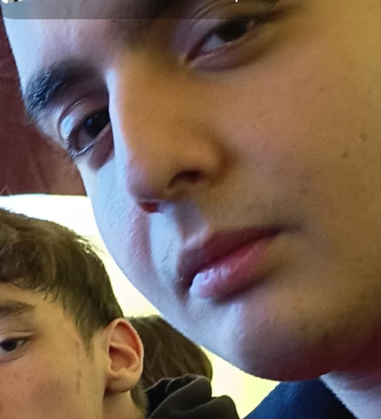

|
Személyes adatokNév: Oláh DominikNem: Férfi Születési hely: Box terem Születési idő: 2024 Állampolgárság: "Magyar" Kedvenc zenéje: |
Története:Oláh Dominik – vagy ahogy az edzők hívják: „A Kis Flex Mester” – egy olyan karakter, akinek már a születési helye is elárul mindent. A dokumentum szerint ugyanis Dominik a box teremben született. Nem a kórház melletti váróban. Nem a folyosón. Közvetlenül a ring mellett. A legenda úgy tartja, hogy amikor világra jött, az első hang, amit kiadott, nem sírás volt… hanem egy apró, pici „húzzadfiam!” edzői motiváció. Születési idő: 2024 Ez több mindent is jelenthet: Dominik lehet egy jövőből érkezett, frissen gyártott sportmodell, lehet a box terem új évnyitó ajándéka, de az is lehet, hogy egyszerűen fiatalabbnak mondja magát, mint amennyi. A barátai szerint Dominik életkora úgy működik, mint a testzsír-százaléka: soha senki nem tudja pontosan. A természetes pózoló A fő képen Dominik büszkén feszíti a karját. De nem akárhogyan. Ez az a fajta póz, amit azok csinálnak, akik már legalább kétszer ránéztek a tükörre aznap. A mozdulat magabiztos, légies, és azt üzeni: „Ez itt a bicepsz. Nem nagy, de legalább az enyém.” Állampolgárság: „Magyar” Idézőjellel. A dokumentumban. Ez vagy azt jelenti, hogy Dominik még gondolkodik rajta, vagy azt, hogy a box terem állampolgársági ügyintézési rendszere egy kicsit túl modern. A mellékképek sztorija Az alsó fotók alapján Dominik több különböző üzemmódban képes működni: Flex Dominik – aki minden egyes lehetőséget kihasznál a pózolásra. Oldalnézetes Dominik – aki úgy ül, mintha életének éppen fontos döntést kéne hoznia („kérjem-e a protein turmixot vagy sem?”). Drámai Közelis Dominik – akinek a tekintete azt mondja: „Egyszerre vagyok fáradt, éhes, és biztos vagyok benne, hogy ma is edzek… talán.” Az utolsó ikon: A Rejtély – valami nem töltött be, de valószínűleg Dominik szellemi formája volt. A box terem örök reménysége Dominik a terem büszkesége, mert: sosem adja fel, néha még oda is ér időben edzésre, és mindig mosolyog, mintha pontosan tudná, hogy egyszer még ő lesz a legkeményebb a csoportos edzésen. Tényleg olyan figura, aki úgy néz rád, mintha bármelyik pillanatban megkérdezné: „Tesó, mekkora súllyal nyomsz?” |
Kapcsolódó körözésekTanár bosszantása – Btk. 420.§Órai rendbontás – Btk. 666.§ |